첫 iOS 앱, 6개월 만에 월 4만 1천 달러
Starter Story는 돈을 버는 작은 사업의 창업자를 불러 숫자와 방법을 묻는 채널이에요. 이번 손님 Rasty Turek은 iOS 앱을 한 번도 만들어 본 적이 없던 사람이에요. 코딩 에이전트에게 맡겨 약 3주 만에 첫 앱 Vaultaire를 내놨어요. 첫 달 매출은 66달러였고, 6개월 뒤에는 한 달에 4만 1천 달러를 벌었어요. 지금은 하루 평균 2~3천 달러 수준이에요.
진행자 Pat Walls는 이번 회차에서 볼 것을 두 가지로 정리해요. 화면의 1번은 '단순한 앱'이고, 2번은 '경쟁이 치열한 시장에서 살아남기'예요. 1번 아래에는 월 4만 1천 달러라는 숫자가 붙어 있어요.
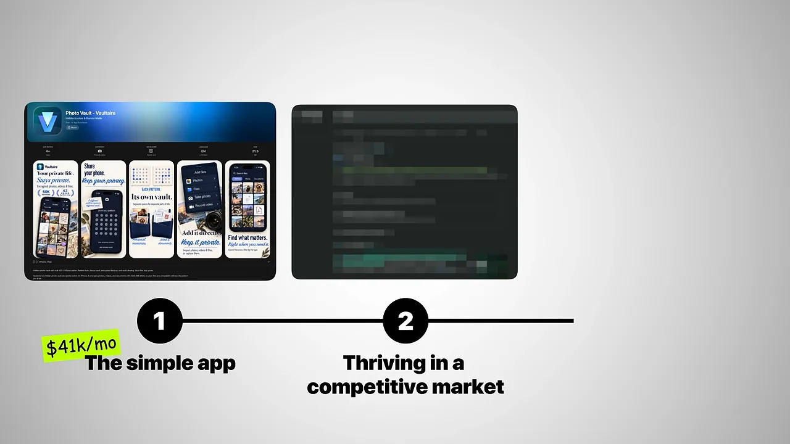
Pat이 특히 강조하는 건 성장 방법이에요. 틱톡에 영상을 올린 것도, 유료 광고를 돌린 것도 아니에요. 요즘 '낡았다'는 말을 듣는 방법이 2026년에도 잘 통하고 있다는 게 이 회차의 요점이에요. Rasty는 코드도 웹사이트 글도 한 줄 직접 쓰지 않았다고 말해요.
I literally haven't written single line either of code or the text on the web.
코드도, 웹사이트 글도 말 그대로 한 줄도 직접 쓰지 않았어요.
— 영상 00:00
앱 화면은 금고 목록이에요. 맨 위에 금고 이름과 파일 검색창이 있고, 아래로 'VAULT'라고 적힌 보라색 타일이 날짜별로 쌓여 있어요. 타일 하나가 암호화된 파일 하나예요. 오른쪽 아래 + 버튼으로 파일을 더 넣어요.
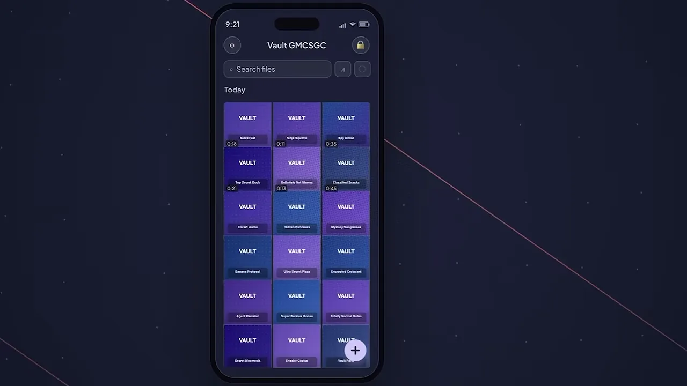
앱이 하는 일과 대시보드 숫자
서버 없는 Dropbox
Rasty는 Vaultaire를 'Dropbox와 아주 비슷한데 암호화돼 있는 것'이라고 설명해요. 차이는 암호화가 일어나는 곳이에요. 파일은 온디바이스 암호화로 기기 안에서 잠겨요. 서버도, 다른 사람과 나눠 갖는 키도 없어요. 그래서 만든 사람도 Apple도 내용을 볼 수 없어요. 대신 패턴을 잊으면 되찾을 방법도 없어요.
잠금 화면에는 'Draw your pattern'이라는 안내와 점이 5줄 5칸으로 놓여 있어요. 왼쪽 위 세 점이 진하게 칠해진 건 지금 패턴을 그리는 중이라는 뜻이에요. 아래쪽에는 복구 문구로 여는 버튼과 공유 금고에 들어가는 버튼이 작게 있어요.
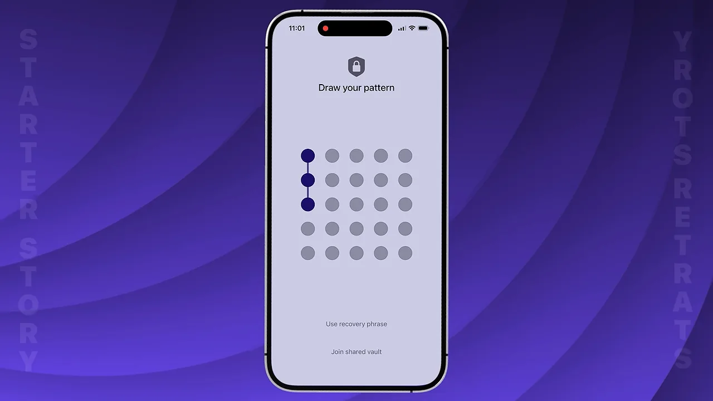
무료로 내려다 붙인 유료 옵션
앱은 원래 완전 무료로 낼 생각이었어요. 출시 전날, 고급 기능을 쓰는 사람들의 문의에 덜 시달리고 싶어서 몇 달러짜리 유료 옵션을 붙였어요. 결과는 예상 밖이었어요. 결제의 약 60%가 평생 이용권이고, 이 평생 이용권이 매출의 80% 이상을 차지해요. 누적 다운로드는 막 6만 건을 넘었어요.
또 하나 다른 점은 언제 결제가 일어나느냐예요. Rasty는 Cal AI를 예로 들어요. 화면의 Cal AI 인스타그램처럼 짧은 영상으로 사람을 끌어오는 유행 앱은, 첫날 결제시키지 못하면 영영 못 시킨다는 전제로 움직여요. Vaultaire는 반대로 첫날 결제 전환율이 가장 낮고 60일째쯤이 가장 높다고 해요.
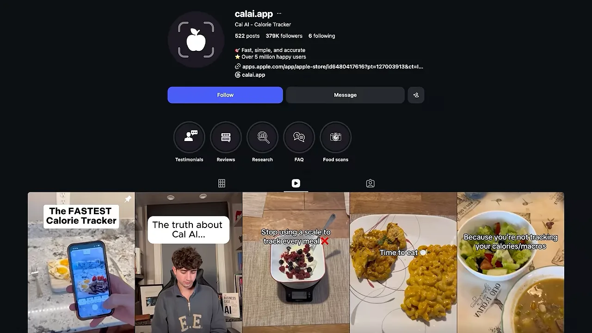
대시보드로 확인한 숫자
진행자의 요청으로 Rasty가 App Store 분석 화면을 열어요. 먼저 첫 다운로드 그래프예요. 왼쪽 위 합계는 40.7K이고, 6월 27일에 다운로드가 한 번 크게 튀어요. 출처는 Apple 검색이었는데, 이상하게도 매출은 같이 오르지 않았다고 해요. 화면 합계는 고른 기간만 센 값이라, 말로 한 누적 6만 건보다 작게 나와요.
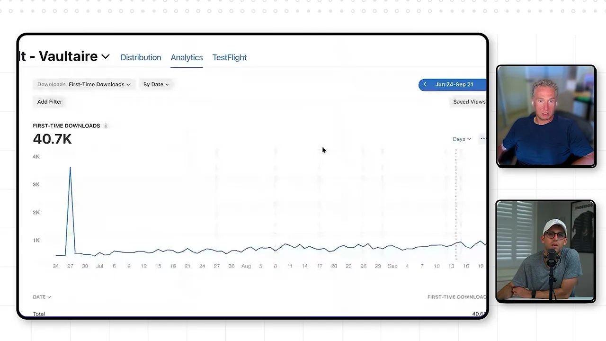
다음은 매출(Proceeds) 그래프예요. 같은 기간 합계가 84.1K 달러이고, 6월 30일 하루 200달러이던 선이 오른쪽으로 갈수록 오르내리며 올라가요. Rasty는 요즘 하루 매출이 2천 달러 근처에서 천천히 오르고 있다고 말해요.
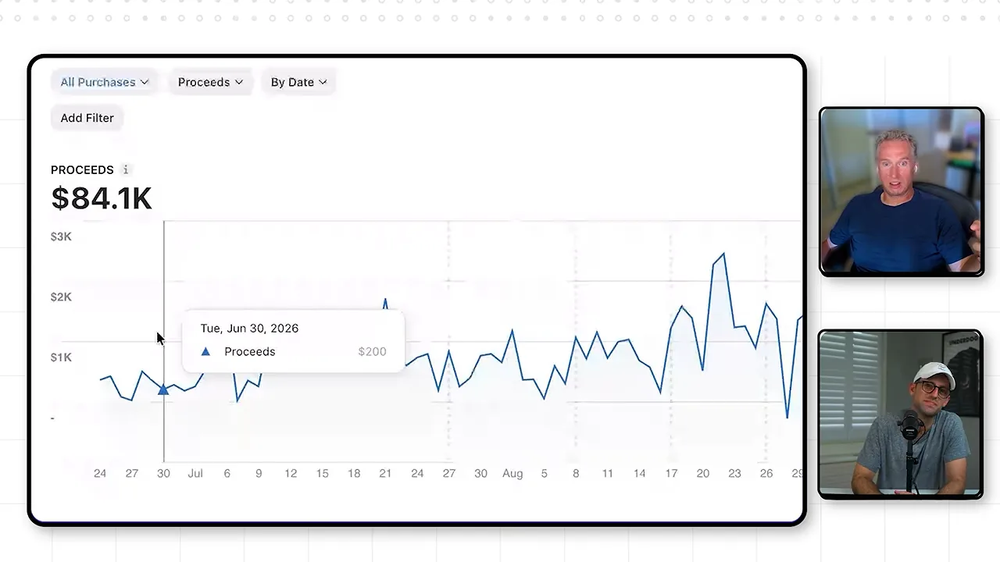
앞에서 말한 '늦게 결제하는' 패턴도 숫자로 보여 줘요. 화면 아래 카드에 'Day 1 download to paid 5.47%'가 있어요. 다운로드한 첫날 결제한 사람이 5.47%라는 뜻이에요. 같은 화면 위쪽에는 35일째 비율이 8.62%로 나와요.
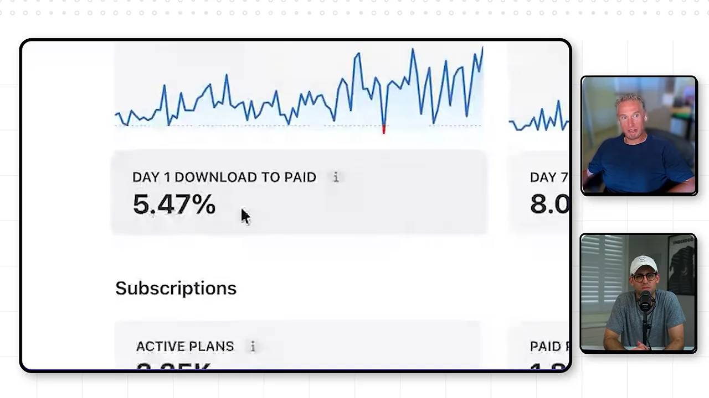
두 숫자를 나란히 놓으면 차이가 보여요. 35일 동안 결제 비율이 처음의 약 1.6배가 돼요.
가격은 세 가지예요. 평생 이용권이 연간의 두 배 값이라, 1년 넘게 쓸 사람에게는 평생 이용권이 더 싸요. 결제 대부분이 평생 이용권이라 MRR(Monthly Recurring Revenue)은 대시보드에서 1.47K 달러로 낮게 보여요. 매달 반복해서 들어오는 돈이 아니라 한 번에 들어오는 돈이 대부분이라서예요.
| 요금제 | 가격 | 영상에서 한 말 |
|---|---|---|
| 주간 | 1.99달러 | — |
| 연간 | 19.99달러 | — |
| 평생 | 39.99달러 | 결제의 약 60%, 매출의 80% 이상 |
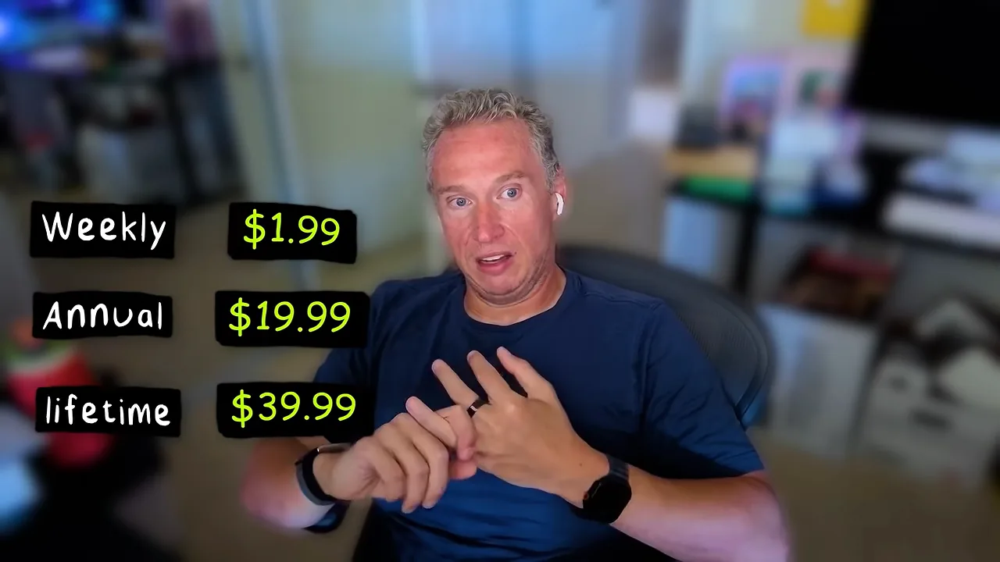
보안 엔지니어 출신, 자기 문제를 풀다
진행자는 Rasty가 처음 창업하는 사람이 아니라는 점을 짚어요. 이 구간은 얼굴만 나오는 대담이라, 말로 들려준 경력을 순서대로 그렸어요.
flowchart TD A["슬로바키아
700명 마을"] --> B["보스턴 보안 회사
(Google이 인수)"] B --> C["Google
Gmail 팀"] C --> D["보안 스타트업"] D --> E["엔터테인먼트 회사
(Amazon이 인수)"] E --> F["Pex
음악 저작권 서비스
(작년 매각)"] F --> G["Vaultaire
첫 iOS 앱"]
Pex는 벤처 투자를 받은 회사예요. Rasty는 이를 엔터테인먼트, 그중에서도 음악에 집중한 '서비스형 저작권' 회사라고 소개해요. 작년에 이 회사를 판 뒤에 Vaultaire를 만들었어요.
아이디어는 자기 문제에서
암호화폐를 다루는 사람은 지갑 키를 여기저기 흩어 두는 경우가 많아요. 기기 가까이 두면서도 안전하게 보관할 곳이 마땅치 않거든요. 신분증 사진이나 출생증명서도 마찬가지예요. Vaultaire는 Rasty가 이 문제를 풀려고 만든 도구예요. 누가 쓸지도 몰랐고 돈을 받을 생각도 없었어요. 일단 세상에 내놓기만 하자는 마음이었다고 해요.
큰 경쟁자를 웹 검색으로 우회하기
App Store에서는 이길 수 없는 싸움
사진 금고 앱 분야는 15년이 넘은 앱이 많아요. 사용자가 수백만이고 다운로드도 많아서 App Store는 이들을 먼저 보여 줘요. Rasty는 그 순위 경쟁에서는 승산이 없다고 봤어요. 대신 이 오래된 앱들이 손대지 않는 곳을 찾았어요. 돈이 충분해서 굳이 신경 쓸 필요가 없는 웹 검색이에요.
그래서 App Store에서 찾을 법한 키워드를, 같은 뜻을 가진 웹 검색어로 전부 끌어오기로 했어요. 시작은 기능을 정리한 마케팅 사이트였어요. 화면의 카드 여섯 장이 사이트에 적힌 기능이에요. 패턴 암호화, 비밀 문구, 그럴듯한 부인 가능성, 숨겨진 금고, 강요 모드, 암호화된 iCloud 백업이 있어요.
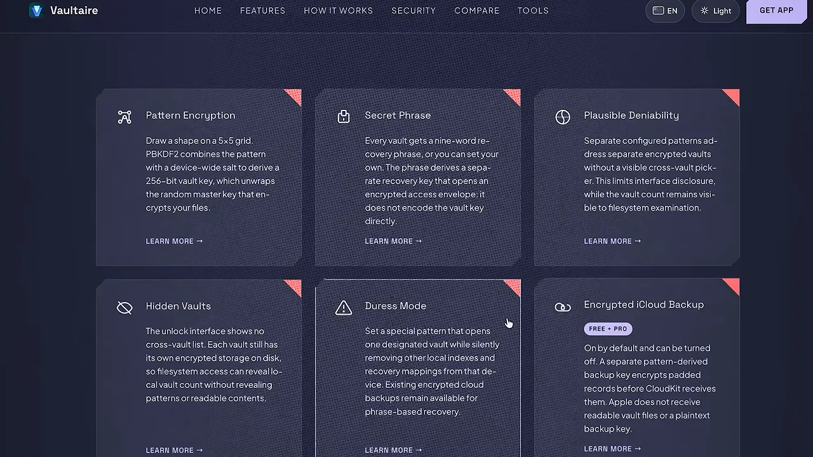
그다음에 '아이폰에 사진을 어떻게 보관하나' 같은 가이드를 연달아 붙였어요. 이 글들도 사이트 코드처럼 전부 코딩 에이전트가 썼어요. 시간이 지나면서 사이트에 도메인 권위가 쌓였고, 권위를 따라 트래픽도 늘었어요.
트래픽보다 전환
트래픽이 생긴 뒤에는 전환에 집중했어요. Rasty는 에이전트에게 CTA(Call To Action) 구조를 챙기라고 시켜요. 사람들이 글을 읽다가 흔히 멈추는 지점마다 앱으로 넘어갈 길을 두라는 거예요. 아래 화면에서 글 중간에 'Download Vaultaire Free' 버튼이 들어간 게 그 예예요. 버튼 아래에는 'Hide iPhone videos safely'라는 다른 가이드로 가는 그림이 이어져요.
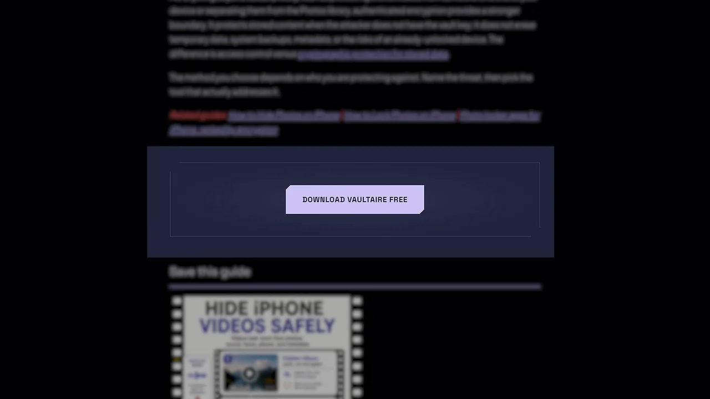
지금은 웹이 유입의 대부분이에요. 웹에서 앱으로 넘어가는 비율은 약 10%라고 해요.
매일 아침 도는 SEO 에이전트
진행자는 이 구조를 '콘텐츠 마케팅 팀과 전환 팀이 있는데 실제 사람은 없는 것'이라고 표현해요. 그 팀 역할을 하는 게 매일 돌아가는 에이전트예요.
평범한 에이전트에 Google을 붙이는 gum
Rasty가 쓰는 건 평범한 Claude나 Codex예요. 특별한 건 그가 직접 만든 오픈소스 CLI(Command Line Interface) 도구 gum이에요. gum은 Google 검색과 Google Keyword Planner를 포함한 Google 서비스 전체를 MCP(Model Context Protocol)로 감싸서 에이전트가 부를 수 있게 해 줘요. 화면의 gumcli.dev 첫 페이지 제목도 'Google APIs for agents and terminals'예요. 왼쪽 메뉴에 MCP server, Agent setup 항목이 따로 있어요.
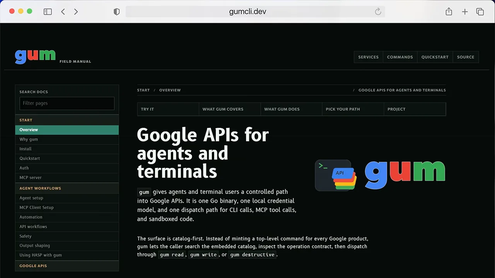
매일 아침 도는 순서
에이전트는 매일 아침 검색 데이터를 훑어요. 찾는 건 '사이트가 검색 결과에 뜨긴 하는데 클릭으로 이어지지 않는' 키워드예요. Rasty의 예로는 어떤 키워드로 1만 6천 번 노출됐지만 50위쯤이라 클릭이 0인 경우예요. 에이전트는 그 키워드에 맞춘 가이드를 새로 쓰고 게시해요. 말로 설명한 순서를 그림으로 옮겼어요.
flowchart TD A["매일 아침
검색 데이터 훑기"] --> B["노출은 많은데
클릭 없는 키워드 찾기
(예: 1만 6천 번 노출, 50위)"] B --> C["그 키워드에 맞춘
가이드 작성·게시
(하루 한 편)"] C --> D["기존 인기 글에서
새 가이드로 내부 링크"] D --> E["3~4일 뒤
Google이 새 글 인식"] E --> F["트래픽 증가"] F --> G["CTA로 앱 다운로드
(웹→앱 약 10%)"] G --> A
영상은 실제 검색 결과도 보여 줘요. 'hide files on iphone'으로 검색하면 Vaultaire 사이트가 두 번 나와요. 하나는 AI 사진 메타데이터 제거 도구 페이지이고, 테두리가 쳐진 다른 하나는 'Private iPhone Photo Vault, End-to-End Encrypted'라는 앱 소개 페이지예요.
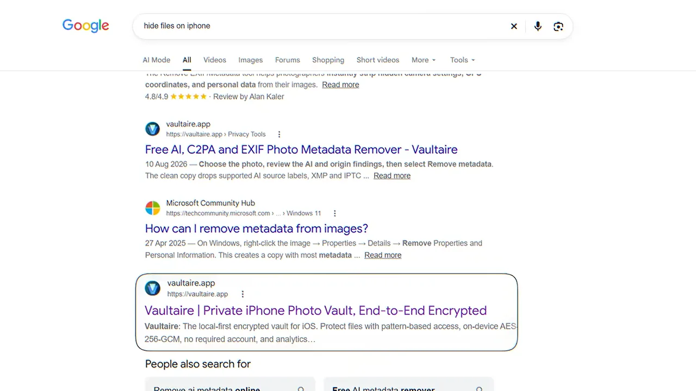
새 글이 빨리 순위에 오르게 하는 장치가 내부 링크예요. 아래 그림의 위쪽 초록 상자가 이미 트래픽이 많은 페이지예요. 거기서 내부 링크로 아래쪽 새 페이지를 연결해요. 새 페이지는 특정 키워드 하나에 맞춰 만든 것이에요. Rasty는 이렇게 하면 Google이 새 글을 먼저 챙긴다고 설명해요.
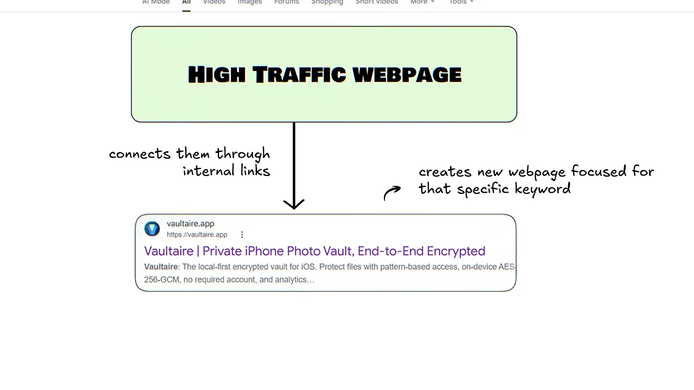
하루 한 편이 핵심
Rasty는 하루에 한 편만 낸다는 점을 강조해요. 그는 Google이 글이 많이 쏟아지지 않는 대신 품질이 높은 사이트를 좋아한다고 봐요. 그래서 글이 의미 없는 단어 나열이 되지 않게 신경 써요. 진행자도 이 점에 주목해요. SEO(Search Engine Optimization)를 자동화한다는 사람들은 하루 천 편씩 AI 글을 쏟아 내는데, Rasty는 정반대라는 거예요.
I make sure that the content is not just like vomit of words.
글이 단어를 토해 놓은 것처럼 되지 않게 신경 써요.
— 영상 08:56
진행자는 여기서 한 걸음 더 나가요. 보안처럼 좁은 관심사를 가진 독자에게 쓸모 있는 글을 쌓으면, Google뿐 아니라 Gemini 같은 LLM(Large Language Model)과 AEO(Answer Engine Optimization) 쪽 AI 검색 요약에도 더 자주 뜰 거라고 예상해요.
기술 스택, 데모, FBI 전화
가벼운 기술 스택
진행자가 이 사업은 대부분이 이익이라고 하자 Rasty가 쓰는 도구를 꼽아요. 앱은 Swift와 UIKit으로 만들었어요. iCloud 기능을 많이 쓰지만 나머지는 전부 앱 안에서 돌아가요. 코딩은 Codex와 Claude가 맡고, 개인용으로 로컬 모델도 써요. 사용자 분석은 무료인 PostHog로 해요.
화면에 정리된 비용을 보면 구조가 단순해요. 개발 도구인 Swift는 무료이고, 코딩 쪽에 Codex와 Claude가 각각 월 200달러로 적혀 있어요. 서버 비용 칸은 아예 없어요.
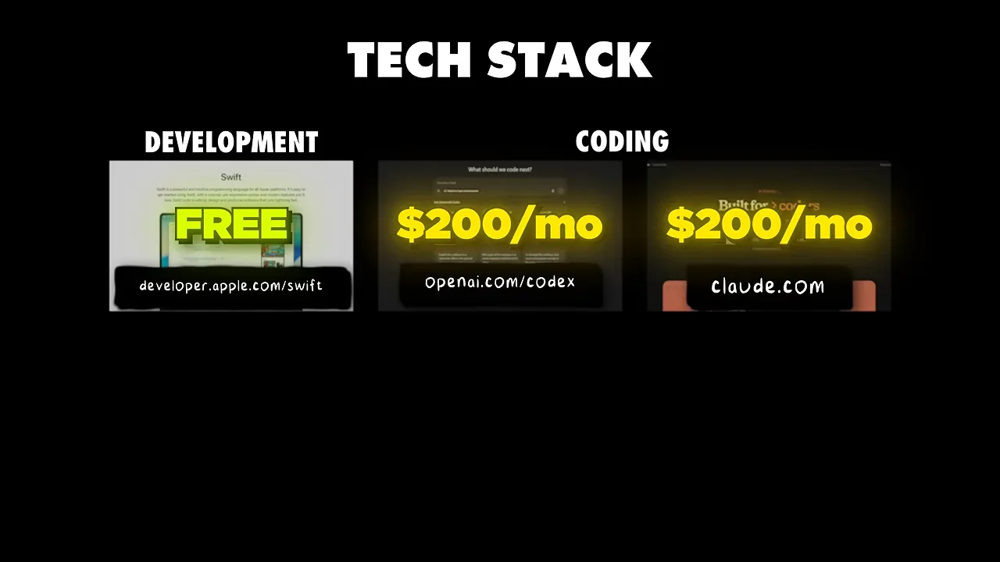
Rasty는 지금 남은 일의 99%가 Claude가 매일 아침 일어나 가이드를 쓰는 것뿐이라고 말해요. 사용자와 트래픽이 아직 크지 않아서 측정 도구도 무료 요금제로 충분하고, 요즘은 이 정도 사업을 거의 공짜로 굴릴 수 있다고 해요.
데모: 패턴 하나에 금고 하나
쓰는 법은 앞에서 본 잠금 화면 그대로예요. 사용자가 패턴을 그리면, 어떤 패턴이든 그 패턴에 해당하는 금고가 열려요. Rasty는 이렇게 만들 수 있는 금고가 약 520억 개라고 해요. 열린 금고에 파일을 넣으면 끝이에요. 밖에서는 금고에 데이터가 얼마나, 무엇이 들어 있는지 알아낼 방법이 없어요.
FBI가 걸어 온 전화
이 구조 때문에 생긴 일화도 있어요. 어느 금요일, Rasty는 FBI(Federal Bureau of Investigation) 요원에게 전화를 받았어요. 붙잡은 용의자가 이 앱으로 금고를 열어 민감한 기록을 숨긴 것 같으니 도와 달라는 거였어요. 하지만 앱은 만든 사람조차 그 사람이 금고에 무언가를 넣은 적이 있는지 알 수 없게 설계돼 있어요. 요원은 꽤 언짢아했지만, Rasty는 그게 바로 이 앱이 하는 일이라고 말해요. 진행자도 그래서 사람들이 이 앱을 쓰는 거라고 맞장구쳐요.
조언과 진행자들의 해석
Rasty의 조언: 일단 시작하기
마지막 질문은 이제 막 회사나 앱을 시작하려는 사람에게 해 줄 조언이에요. Rasty의 답은 짧아요. 시작하는 게 가장 어렵다는 거예요. 그에게도 머릿속에 준비된 프로젝트가 적어도 스무 개가 넘지만, 세상에 내놓지 않은 동안은 존재하지 않는 것과 같다고 해요.
As long as they're not out there, they don't exist.
세상에 나와 있지 않은 한, 그건 존재하지 않아요.
— 영상 11:40
또 사람들이 일을 '어떻게 해야 하는지' 너무 오래 고민한다고 지적해요. 그의 경험은 B2B(Business to Business)와 엔터프라이즈 쪽이라 소비자 앱은 아무것도 몰랐어요. 자기가 배울 수 있었으면 누구나 배울 수 있다고 해요. 열린 마음으로 한 발씩 내딛고, 매일 어제보다 조금만 나아지면 된다는 게 그의 결론이에요.
진행자 두 사람의 해석
대담 뒤에 진행자 Pat Walls와 공동 진행자 Gus Tiffer가 따로 이야기를 나눠요. Pat의 질문에 Gus는 Rasty가 예전에 출연한 Mike Hill과 닮았다고 해요. 둘 다 단순하지만 쉽지는 않은 방식으로 일한다는 거예요. 두 사람이 짚은 차이를 표로 모았어요.
| 평소 출연하는 앱 창업자 | Rasty | |
|---|---|---|
| 성장 방법 | 틱톡, 바이럴 | 하루 한 편 글로 경쟁자를 조금씩 잠식 |
| 태도 | 최신 성장 해킹을 이야기함 | 한 발씩 꾸준히 내딛기 |
| 나이대 (진행자 추정) | 20대 | 40대쯤 |
SEO에 대해서는 한 진행자가 여전히 SEO가 대체로 죽었다고 봐요. 그런데도 이 앱에 통하는 이유는 아주 좁은 분야이기 때문이라고 해석해요. 하루 백만 명이 오는 사이트가 될 일은 없지만, 아주 구체적인 일을 하는 앱이라 맞는 사람이 정확히 찾아온다는 거예요.
그는 측정되지 않는 유입도 클 거라고 봐요. 개인정보 보호 앱이라 Rasty가 분석 도구를 많이 달지 않았고, 그래서 추천, 입소문, LLM에서 오는 유입이 본인이 아는 것보다 많을 거라는 추측이에요. 다른 진행자는 SEO로 시작했지만 글을 꾸준히 내놓는 것 자체가 앞으로 더 큰 성장을 만들 거라고 정리해요. 데모에서 보듯 기능이 많지 않은 단순한 앱이라 마케팅하기도 쉽다는 점도 덧붙여요.